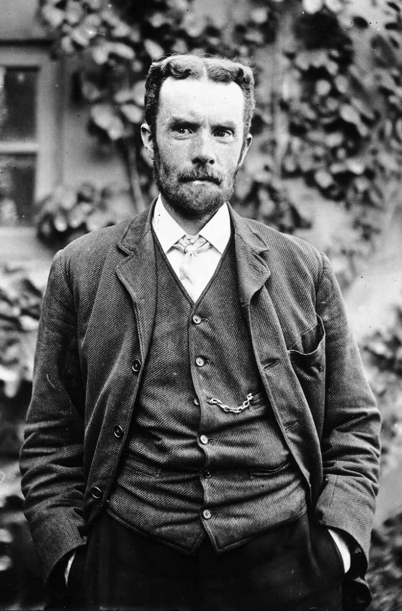
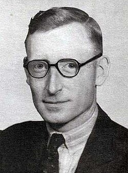
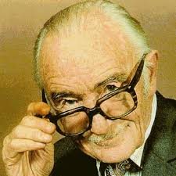
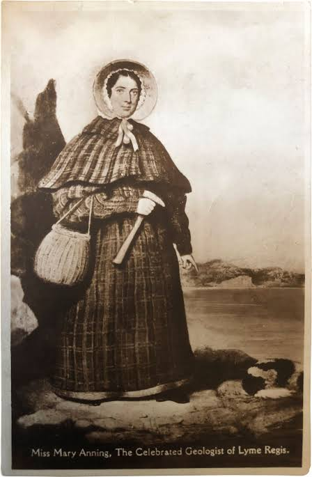
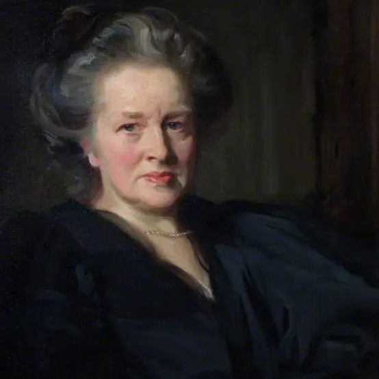

Hidden Figures
Scientists, engineers, and thinkers whose work built the modern world — and whose names were removed from the story.

1850 — 1925
The Engineer Who Rewrote Physics
Reformulated Maxwell's equations, invented operational calculus. Died in poverty and obscurity.

1905 — 1998
Father of the Modern Computer
Built Colossus, the world's first programmable electronic computer, to break Nazi codes. Sworn to secrecy for 30 years.

1909 — 1988
Pioneer of Evidence-Based Medicine
Demanded clinical trials for medical treatments. Spent decades fighting a profession that preferred tradition over evidence.

1799 — 1847
The Fossil Hunter of Lyme Regis
Discovered some of the most important fossils in history. Her gender and class kept her name out of the papers that described them.

1836 — 1917
First Female Doctor in England
Fought every institution that tried to stop her from practising medicine. Then built a hospital that outlasted them all.
1914 — 2000
The Inventor Behind Modern Wireless
Co-patented frequency hopping in 1942 — the seed of Wi-Fi, Bluetooth and GPS. Credited as a movie star, not an inventor, for decades.